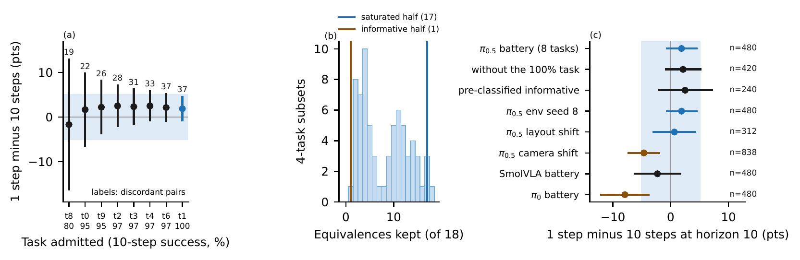
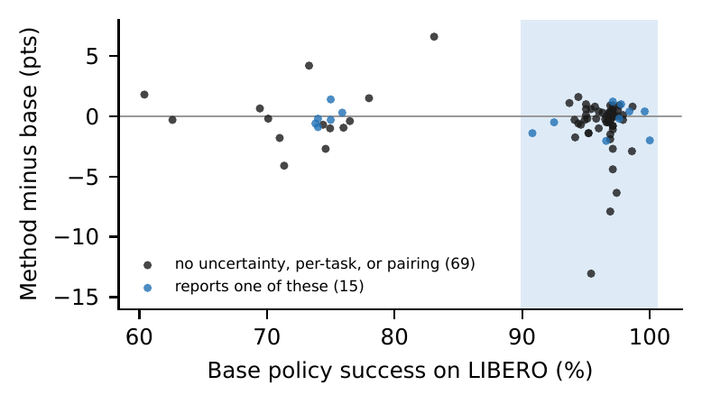

Papers that make VLA policies cheaper to run justify their speedups by showing no loss on
LIBERO, where base policies already succeed in more than 90% of episodes. Those no-loss verdicts
are supplied largely by tasks both settings already solve, so they say little about the tasks on
which policies fail. On released pi0.5, one denoising step is equivalent to ten within
plus or minus 5 points on an eight-task LIBERO-10 battery, yet inconclusive on the four tasks
classified as informative before the experiment. Across all 79 paired comparisons in our grids,
the saturated tasks keep 17 of 18 equivalence certificates and the informative tasks keep 1, while
the informative tasks keep 57 of 59 significant differences. Among 86 VLA efficiency papers claiming
parity on LIBERO, 76% compare against a base above 90% success and 15 report any uncertainty,
per-task result, or paired analysis.

Where equivalence certificates come from. (a) The one-step vs. ten-step interval on
pi0.5 enters the plus or minus 5-point margin only once near-saturated tasks are admitted; the
last, perfectly solved task adds 60 pairs and no disagreement. (b) The 18 certificates in our
grids, re-tested on every four-task subset at equal episode count: the saturated half keeps 17,
the informative half 1. (c) The same contrast where failures are common.
Findings
Saturated tasks supply the certificate. Pairs of episodes both settings solve tighten an
absolute-difference interval for the pooled average while carrying no information about the
episodes on which a setting could fail, the leniency of absolute margins at low event rates
long documented for non-inferiority trials. On pi0.5 the one-step contrast is equivalent on
the battery ([-0.7, +4.5] points) and inconclusive on the informative tasks ([-2.0, +7.1]).
The pattern is systematic. At equal episode counts, the four saturated tasks keep 17 of
18 equivalence certificates but only 38 of 59 significant differences; the four informative
tasks keep 1 and 57. The asymmetry holds under unpaired and paired intervals, a 90% rule, and a
plus or minus 7-point margin.
Where failures are common, verdicts diverge. One step costs released pi0 7.9 points
(p=0.00025) and pi0.5 4.7 points under camera-viewpoint shift (838 pairs, p=0.0008),
concentrated in the largest shifts; it is inconclusive for SmolVLA.
No single margin scale is safe. A failure-rate ratio ignores solved tasks and removes the
dilution, but under camera shift, where most episodes fail, it certifies non-inferiority even
though failures rise significantly. Absolute margins are lenient when failures are rare,
relative margins when they are common.
The efficiency literature makes its claims in this regime. Of 86 papers claiming parity
with their base policy on LIBERO, 76% start from a base at or above 90% success, 15 report any
uncertainty, per-task result, or paired analysis, and 45% state no usable episode count. The
audit does not show that the certified shortcuts are costly; it shows the certificates cannot
tell.

No-loss claims in 84 audited VLA efficiency papers with numeric LIBERO rates. Shaded:
base at or above 90% success. Blue: the claim reports uncertainty, per-task results, or a paired
analysis.
Check a no-loss claim
The toolkit ships the three-part report the paper recommends: discordant pairs with an exact
conditional odds-ratio interval, the paired interval on tasks declared informative in advance, and a
failure-rate ratio against a declared bound.
pip install -e ".[stats]"
roborigor report --a runs/fast --b runs/base --informative-tasks 0,2,8,9
all tasks n=480 96.5% vs 94.6% diff +1.9 [-0.7, +4.5] b-c 23-14 -> EQUIVALENT
informative n=240 94.2% vs 91.7% diff +2.5 [-2.0, +7.1] b-c 17-11 -> INCONCLUSIVE
failure ratio A/B 0.65 [0.31, 1.21] -> within bound
warning: equivalence on all tasks does not hold on the informative tasks
Data and tooling
31,858 per-episode records on released pi0.5, pi0, and SmolVLA across LIBERO and LIBERO-Plus,
with a datasheet; a paired evaluation harness with exactly-once resume; exact intervals, power
calculations, and variance decomposition. Every number in the report regenerates from the records
by one script.
BibTeX
@misc{gunukula2026ceiling,
title = {Certified by the Ceiling: Saturated Benchmarks Supply the No-Loss Claims Behind VLA Acceleration},
author = {Gunukula, Nihal},
year = {2026},
howpublished = {Technical report},
url = {https://nihalgunu.com/roborigor/certified-by-the-ceiling.pdf},
note = {Code and per-episode logs: \url{https://github.com/nihalgunu/roborigor}}
}